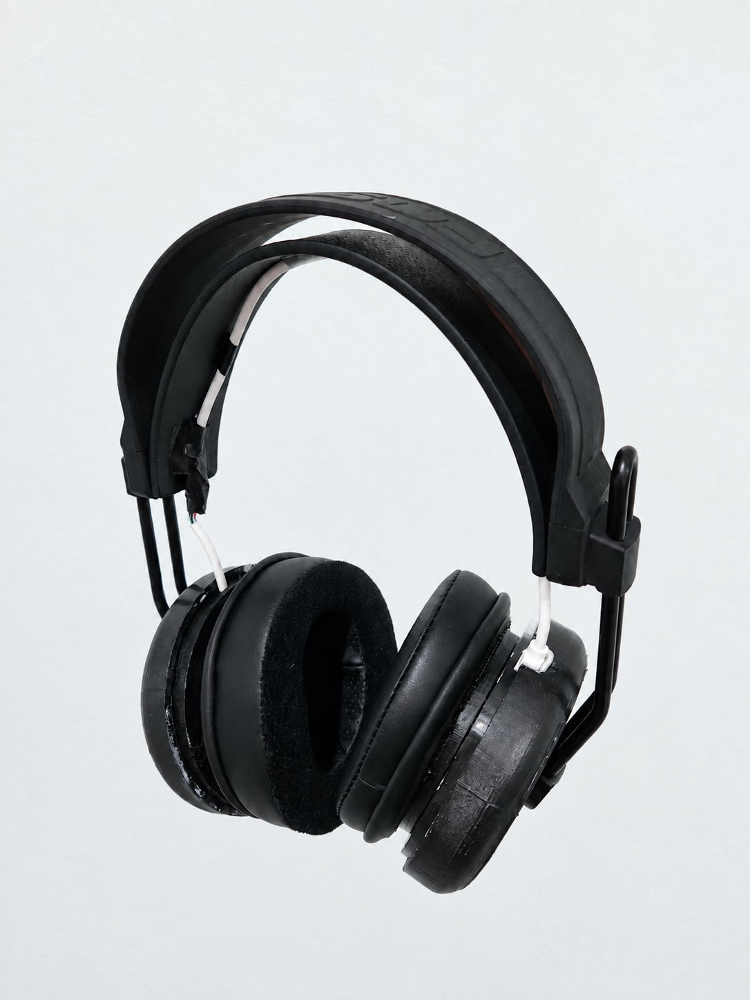
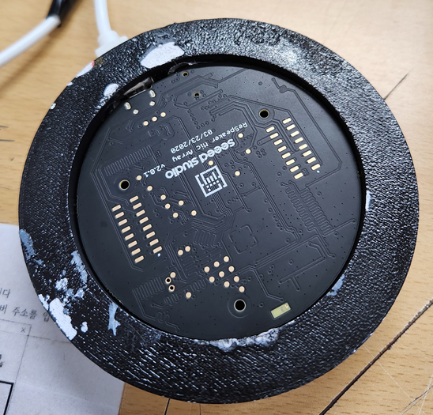
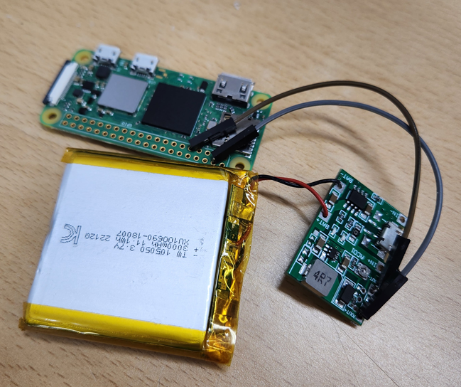

ACCESSIBILITY / WEARABLE DEVICE
청각장애인을 위한
헤드셋형 보조기기
주변의 음성을 텍스트로,
중요한 정보를 알림으로.
입모양에 의존하는 의사소통의 제약에서 출발해, 음성 인식과 키워드 기반 알림을 헤드셋 형태로 연결한 보조기기 프로젝트입니다.
{kind=link}

- 프로젝트
- 2024 창업경진대회 출품 기획
- 팀 / 역할
- ESC · 5인 팀 / 박근호 · 팀장
- 접근 방식
- 사용자 인터뷰 · 웨어러블 시제품
01 / MOTIVATION
상대의 입모양이 보이지 않을 때도
마스크 착용이 일상화되었던 시기, 입모양을 보고 대화를 이해하는 청각장애인은 병원·은행 같은 공간에서 의사소통에 제약을 겪었습니다. 상대방이 입이 보이는 마스크를 착용해야 하는 방식 대신, 사용자가 직접 착용하고 활용할 수 있는 보조 수단을 고민했습니다.
사업계획서는 기존 보조기기의 비용과 사용 부담도 문제로 제시합니다. 이 프로젝트는 별도의 수술 없이 착용하는 헤드셋과 모바일 앱을 통해 주변 음성 정보에 접근할 수 있도록 하는 것을 목표로 삼았습니다.
02 / USER-CENTERED DESIGN
사용자 인터뷰에서 제품 방향으로
참가신청서 작성 시점에 중증 청각장애인 2명과 제품의 실용성에 관한 인터뷰를 진행했습니다. 이를 출발점으로, 주변 음성을 모두 전달하는 기능에 더해 중요한 키워드를 구분하고 사용자의 주의를 환기하는 방향을 설정했습니다.
팀 ESC는 기획·소프트웨어·하드웨어·디자인을 아우르는 5인 팀으로 구성되었고, 박근호는 신청서상 대표자이자 팀장으로 참여했습니다. 기기 개발뿐 아니라 사용자 피드백, 시제품 제작, 후속 실사용 검증까지 연결하는 제품 개발 계획을 세웠습니다.
일상 대화의 내용을 확인하고, 중요한 정보가 들어왔을 때 알림을 받을 수 있는 착용형 인터페이스.
03 / SYSTEM FLOW
소리 입력에서 사용자 알림까지
발표 판넬의 기술 흐름을 바탕으로 정리한 시스템 설계입니다.
- 음성 수집음성 인식 모듈이 생활 속 음성을 입력받습니다.
- STT 변환 및 DB 조회음성을 텍스트로 변환하고 키워드 판단에 사용할 정보를 조회합니다.
- 키워드·중요도 판단인식된 텍스트에서 설정된 키워드를 찾아 알림의 중요도를 구분합니다.
- 앱으로 정보 전달텍스트와 판별 정보를 모바일 앱에 전달하는 흐름을 구성합니다.
- 진동 알림중요도에 따라 진동으로 사용자의 주의를 환기합니다.
신청서는 앱에서 키워드를 재가공하는 구조를, 판넬은 키워드 판단 후 앱으로 결과를 보내는 흐름을 제시합니다. 세부 처리 위치는 설계 자료에 차이가 있어 전체 정보 흐름을 중심으로 설명했습니다.
04 / HARDWARE
인식·연산·진동을 헤드셋에 통합
{kind=link}

음성 인식 모듈
주변 음성을 수집하는 입력부입니다. 제작 사진에서는 Seeed Studio ReSpeaker 원형 보드를 이어컵 내부에 배치한 모습을 확인할 수 있습니다. 입력 음성을 STT 처리 단계로 연결하는 역할을 맡습니다.
{kind=link}

연산 보드와 전원부
판넬은 Raspberry Pi Pico WH를 텍스트 처리와 키워드 중요도 판단을 위한 제어 보드로 제시합니다. 실물 사진에는 이 초기 구상과 형태가 다른 Raspberry Pi 보드, 배터리, 전원 모듈이 배선된 모습이 담겨 있습니다. 최종 보드의 세부 모델명과 STT 실행 위치는 자료만으로 확정하지 않았습니다.
진동 액추에이터와 헤드셋 하우징
판넬에서 ‘진동 센서’로 표기한 부품은 사용자에게 알림을 전달하는 출력 장치로 계획되었습니다. 3D 프린팅을 활용한 헤드셋 형태의 하우징에 센서·보드·배선을 수용하고, 이어패드와 헤드밴드를 갖춘 착용형 시제품으로 구성했습니다.
05 / PROTOTYPE
시제품 제작과 시연
완성 외형, 이어컵 내부의 음성 입력 모듈, 연산·전원부 사진을 통해 실제 제작 구성을 정리했습니다. 신청 당시 계획했던 착용형 형태를 시제품으로 구체화한 자료입니다.
06 / VALIDATION & NEXT STEPS
실사용 환경에서 검증할 것들
소음 환경의 음성 인식
사업계획서에는 반향 제거(AEC)와 음원 방향 추정(DOA)을 활용해 음성 인식을 개선하는 계획이 담겨 있습니다. 다양한 소음 환경에서의 인식 품질과 알림 지연을 확인하는 것이 후속 과제입니다.
알림의 정확성과 착용성
중요한 키워드를 놓치거나 불필요한 알림을 반복하지 않는지, 진동을 충분히 인지할 수 있는지, 장시간 착용 시 무게와 배터리가 사용에 어떤 영향을 주는지 검증할 필요가 있습니다.
사용자 피드백을 통한 개선
인천대학교 장애학생지원센터와의 협력 및 파일럿 테스트는 신청서에 제안한 후속 계획입니다. 인터뷰 경험을 실사용 평가로 이어가 제품의 실용성을 확인하는 방향입니다.
신청서의 인식률 95% 이상과 판매가 40~50만 원은 당시 개발·사업화 목표이며, 측정 결과나 실제 판매 실적을 의미하지 않습니다.
내용 참고: 2024년 창업경진대회 참가신청서·사업계획서(팀 ESC), 발표 판넬의 아이디어 및 작동 흐름도. 사진·영상: 제공된 제작 자료.